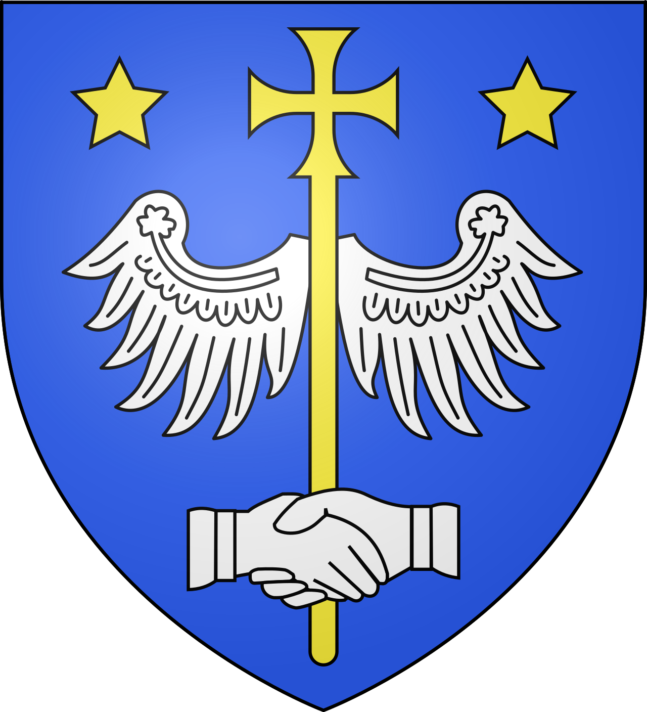

Alet-les-BainsCité abbatiale et thermale


⟹ Villes & Villages Emblématiques ⟸

Alet-les-Bains est implantée dans une vallée étroite de l’Aude, au pied des premiers reliefs pyrénéens. Le site est connu depuis l’Antiquité pour ses sources thermales. La tradition locale attribue aux Romains leur première exploitation organisée, et plusieurs vestiges témoignent d’une occupation antique autour de ces eaux chaudes et de cet axe de circulation naturel.
Une communauté religieuse apparaît au haut Moyen Âge. Selon les traditions monastiques, un premier établissement aurait existé dès le VIe siècle ; l’abbaye bénédictine se développe surtout à partir des VIIIe et IXe siècles, notamment sous l’impulsion des autorités carolingiennes et du comte Béra de Razès. Elle devient progressivement l’un des grands centres religieux de la Haute Vallée.
Au XIe siècle, le pape Urbain II passe dans la région et l’abbaye bénéficie d’un prestige accru. Elle reçoit des reliques et attire des pèlerins. La prospérité monastique favorise la reconstruction de l’église abbatiale dans un style roman monumental, dont les ruines spectaculaires constituent aujourd’hui l’un des grands témoignages architecturaux de l’Aude.
En 1318, le pape Jean XXII transforme l’abbaye en siège épiscopal. Alet devient alors une petite cité d’évêques contrôlant une vaste partie de la Haute Vallée. L’ancienne abbatiale devient cathédrale et la ville se dote de bâtiments et de maisons liés à cette fonction religieuse. Le centre ancien conserve de nombreuses façades médiévales et Renaissance.
Les guerres de Religion du XVIe siècle provoquent de graves destructions. La cathédrale et l’abbaye sont partiellement ruinées et ne retrouveront jamais leur splendeur médiévale. L’évêché subsiste cependant jusqu’à la Révolution. Parmi ses évêques les plus connus figure Nicolas Pavillon au XVIIe siècle, personnalité importante de l’Église française.
Parallèlement, l’exploitation des eaux thermales se poursuit et connaît un renouveau aux XVIIIe et XIXe siècles. Alet devient une station appréciée pour ses sources minérales. Le thermalisme, l’embouteillage de l’eau et le tourisme contribuent alors à l’économie locale. Aujourd’hui, le village associe les ruines romanes de l’ancienne cathédrale, un remarquable ensemble de maisons anciennes, la mémoire épiscopale et un patrimoine thermal qui remonte à l’Antiquité.
Le statut épiscopal acquis en 1318 modifie durablement la physionomie urbaine : autour de l’ancienne abbatiale devenue cathédrale se concentrent les fonctions religieuses et administratives du diocèse. Les maisons anciennes, les demeures de notables et les bâtiments liés au chapitre et à l’évêque témoignent encore de cette période où Alet était, malgré sa taille modeste, une véritable capitale ecclésiastique de la Haute Vallée.
Au XVIIe siècle, l’épiscopat de Nicolas Pavillon (1637-1677) donne à Alet un rayonnement national. Réformateur exigeant du clergé, attentif à la formation religieuse et à l’assistance, il intervient dans les grands débats spirituels de son époque et est associé aux controverses autour du jansénisme. Son action a profondément marqué la mémoire de l’ancien diocèse.
La Révolution française met fin à l’évêché lors de la réorganisation des diocèses. Alet perd alors une fonction institutionnelle exercée pendant près de cinq siècles. Les anciens biens ecclésiastiques changent de statut et la cité entre dans une nouvelle période, tandis que les ruines monumentales de l’abbatiale deviennent progressivement un objet d’intérêt historique et patrimonial.
Au XIXe siècle, avec le goût romantique pour le Moyen Âge et le développement de la protection des monuments, les ruines d’Alet attirent érudits et voyageurs. Prosper Mérimée s’intéresse notamment au site. Les mesures de sauvegarde se développent surtout au tournant des XIXe et XXe siècles, contribuant à préserver l’ensemble roman visible aujourd’hui.
L’histoire thermale connaît parallèlement une nouvelle vigueur. Les eaux minérales, auxquelles la tradition attribue une utilisation depuis l’Antiquité, sont exploitées dans le contexte du grand essor européen du thermalisme. Curistes, voyageurs, établissements de bains et embouteillage de l’eau donnent à Alet une seconde identité, complémentaire de son passé monastique et épiscopal.
Alet-les-Bains offre ainsi une stratification historique rare : mémoire gallo-romaine des sources, christianisation ancienne, abbaye bénédictine carolingienne, architecture romane, pèlerinages, création d’un diocèse, guerres de Religion, épiscopat de Nicolas Pavillon, thermalisme moderne et sauvegarde patrimoniale. Sur quelques rues seulement se concentrent des traces de près de deux millénaires d’histoire.
Alet-les-Bains appartient à la zone Haute Vallée & Pyrénées audoises. Son intérêt tient à la rencontre entre patrimoine local, paysages audois et histoire du territoire.
Cité abbatiale et thermale.
— Repère territorialPour une visite complète, il est conseillé d’associer le cœur du village ou de la ville aux paysages environnants et aux sites patrimoniaux voisins.
Limoux — excursion complémentaire à proximité, pour prolonger la découverte du territoire.
Rennes-le-Château — excursion complémentaire à proximité, pour prolonger la découverte du territoire.
Espéraza — excursion complémentaire à proximité, pour prolonger la découverte du territoire.
Couiza — excursion complémentaire à proximité, pour prolonger la découverte du territoire.